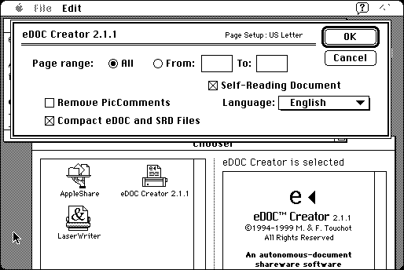

Download
edoc-eng.zip (287K) eDoc 2.1.1 repackaged into a zipped hfs disk image and checksum file. The disk image can be mounted with Mini vMac.
edoc-eng.bin (315K) eDoc 2.1.1 in the original format.
copyright: Michel & Francois Touchot
mod date: Apr 30, 1999
license: shareware
official url :
eDOC Home Page
eDoc Creator, for “MacOS 7 or higher”, creates self-reading documents by printing from any application. These documents can be read in “6.0.7 or higher”.

If you find these downloads useful, please consider helping the Gryphel Project, which hosts them.
Here are the md5 checksums for the downloads, signed with Gryphel Key 5:
--------- GRY SIGNED TEXT --------- 841686ef835fc0c67a1da933da43125c edoc-eng.zip 94d7febbd5877f36400a9840038d150c edoc-eng.bin ------- BEGIN GRY SIGNATURE ------- Gry/4Xa8CFcUzxdN/EDwuyDuTlhUDB14CtSFbgjYIdcCwZ5JoCXiOi2JB+6uG79y JbYLYH6IqVB+N/n3slupZ5KOhxTEE6nAZPJdad+++Vyll266Bom23lSMJMm8Gfbw aIEycetgP9LnlQPXh+XTCbWVy8G4jyUgFaU+APqI49LVtVk8q0zC13aRhgQ86s1I -------- END GRY SIGNATURE --------